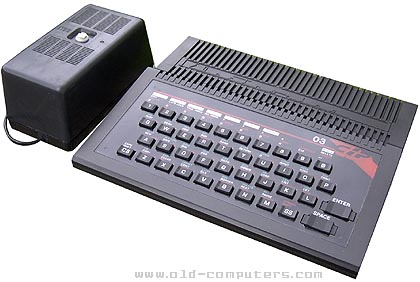
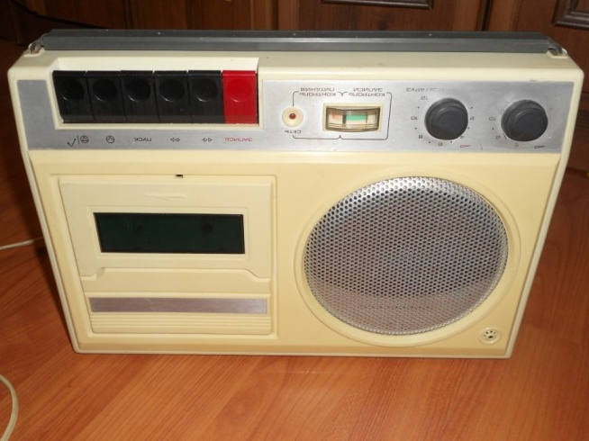

Hello World: Programare humanum est
by Adrian Harabulă on 23 January, 2016
Mi-am dorit de mic să fac programare. Încă nu prea erau calculatoare şi aveam cam 4 ani.
Primul calculator arăta cam aşa:

Iar „CD-ROM”-ul pe-atunci era:

Îmi amintesc cum aşteptam să se încarce BASIC de pe casetă, evident, ca să scriu ce avea să fie primul meu program Hello World:
PRINT "Hello, world!"
Nu mai îmi aduc aminte ce s-a întâmplat de-atunci înainte, au urmat o serie de evenimente. Am fost la şcoala generală, la liceu, apoi la facultate. Am făcut programare în acest timp, dar nu prea mult, doar ceva să fie. Oricum erau teme de făcut, nu prea aveam eu timp de dintr-astea.
Niciodată nu a funcţionat se pare, fă tema şi apoi în timpul liber programează. A fost eroarea ce probabil m-a costat ani de zile. Dar până să îmi dau seama că îmi place cu adevărat să fac programare, a fost preţul pe care l-am plătit.
Eventual când mi-am dat seama ce-mi place suficient de mult a fost şi momentul când am început să fac ceva în privinţa asta. Cum nu aveam cum să mă întreţin singur atunci, am făcut totuşi saltul periculos de a rămâne fără bani de chirie şi mâncare (şi chiar am şi rămas 🙂 ), programând pe cont propiu, ca „freelancer”.
Nu au fost cele mai uşoare vremuri, dar îmi amintesc cu drag că tot acest timp am avut pentru ce lupta şi nicio zi nu a fost pierdută. Orice înfrângere a fost defapt cărămida pentru succesul de mâine. Iar acest MÂINE se pare că există şi îl trăiesc azi aici. Pentru că dacă nu aş fi făcut saltul atunci, probabil acum aş fi fost pe cu totul o altă direcţie, iar această mică plăcere de a scrie cod pentru a face lucruri utile, mai uşor, mai eficient, mai rapid ar fi fost uitată în schimbul a ceva futil.